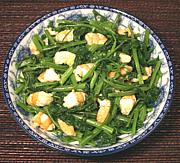

|
Water Spinach & Shrimp SaladVietnam - Nom Rau Muong | ||||
| Serves: Effort: Sched: DoAhead: |
4 salad ** 30 min Hours |
Legal in California, Water Spinach (Ong Choy, Pak Bung) is banned in many US States. This flavorful salad fully exploits the contrast between its wilted leaves and crunchy stems, as well as its affinity for shrimp. | |||
|
1 4 ------ 2-1/2 1 1 1 1/2 ------ 1-1/2 |
# oz --- T t T t T --- T |
Pak Bung (1) Shrimp -- Dressing Lime Juice Shrimp Paste (2) Fish Sauce (3) Palm Sugar Water -- Garnish Toasted Sesame (4) |
Do Ahead: - (10 min)
|